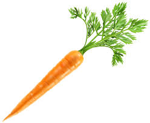
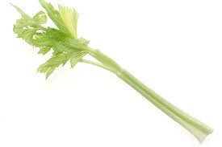
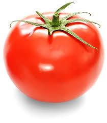
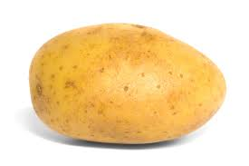

<ion-card>
  
  <ion-toolbar>

  </ion-toolbar>
</ion-card>

<ion-content class="card-background-page">

<a routerLink="/tabs/tab2">
    <ion-card>
      
      <ion-buttons>
          <button ion-button (click)="goAnOtherPage(tab2)">Go an tab2 </button>
        </ion-buttons>
      <div class="card-title">Carrot</div>
    </ion-card>
  </a>
  
  <a routerLink="/tabs/tab3">
    <ion-card>
      
      <div class="card-title">Celery</div>
    </ion-card>
  
    <ion-card>
      
      <div class="card-title">Tomato</div>
    </ion-card>
  </a>
  
  <a routerLink= "/tabs/tab2">
      <ion-card tappable>
          
          <div class="card-title">Potato</div>
        </ion-card>
      </a>
  
  </ion-content>